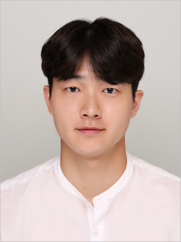

Hyun Go (고현)
PhD Student, Department of Architectural Engineering
University of Seoul, Seoul, Republic of Korea
About
I am a PhD student in the Department of Architectural Engineering at the University of Seoul, where I work with Prof. Hyung-Joon Kim. My research concerns the seismic performance of pipe racks — the steel structures that carry chemical and toxic materials through petrochemical complexes — and of the concentrically braced frames (CBFs) that resist lateral loads in them.
I received my MS (2025) and BS (2023) in Architectural Engineering from the University of Seoul. Feel free to reach out at gohyun2000@uos.ac.kr.
Publications
Journal articles
-
2026
An equivalent single-degree-of-freedom model for estimating the seismic fragility of pipe-rack steel concentrically braced frames
Journal of the Computational Structural Engineering Institute of Korea, 39(5). (in press, in Korean) Scopus
-
2025
Seismic risk evaluation of pipeline supporting chevron steel concentrically braced frames designed according to general steel design requirements
Engineering Structures, 343, 121200. SCIE
-
2024
Probabilistic seismic performance of pipeline supporting CBFs according to seismic design parameters and requirements
Journal of Korean Society of Steel Construction, 36(4), 229–241. (in Korean) KCI
-
2023
Simplified FEA model for non-seismically detailed gusset plates welded to a column web only
Journal of Korean Society of Steel Construction, 35(6), 303–314. (in Korean) KCI
-
2023
Compression buckling behavior and stress distribution of non-seismically detailed gusset plates welded to a column
Journal of the Architectural Institute of Korea, 39(6), 235–243. (in Korean) Scopus
Thesis
-
2025
Seismic risk of pipeline supporting CBFs designed according to different seismic design requirements
Master's thesis, University of Seoul, February 2025. Advisor: Prof. Hyung-Joon Kim.
Conference Presentations
International
-
2025
Collapse capacity and pipeline leakage of pipeline-supporting chevron CBFs designed with general provisions
13th International Symposium on Steel Structures & 14th Pacific Structural Steel Conference (ISSS-PSSC 2025), Jeju, Korea, November 2025.
-
2025
Sliding and rocking behavior of medical beds under seismic excitations
13th International Symposium on Steel Structures & 14th Pacific Structural Steel Conference (ISSS-PSSC 2025), Jeju, Korea, November 2025.
-
2023
Dynamic characteristics of pipeline supporting steel frames without diaphragm
12th International Symposium on Steel Structures (ISSS 2023), Jeju, Korea, November 2023.
-
2023
Cyclic behavior of single and double-angle bracing members employed in pipeline-supporting structures
ce/papers, 6(3–4), 2226–2231. Proceedings of EUROSTEEL 2023, Amsterdam, the Netherlands.
Domestic
-
2026
Seismic response characteristics of pipeline-supporting CBFs designed according to general requirements for steel buildings
Annual Conference of the Korean Society of Steel Construction, June 2026. (in Korean)
-
2026
A simplified equivalent single-degree-of-freedom model for seismic fragility assessment of pipe-rack steel concentrically braced frames
Annual Conference of the Computational Structural Engineering Institute of Korea, GIST, Gwangju, April 2026. (in Korean)
-
2025
Pipeline leakage performance of chevron steel braced-frame pipe racks satisfying only general steel provisions
Proceedings of the Annual Conference of the Korean Society of Steel Construction, 36. (in Korean)
-
2024
Collapse performance of pipe racks with steel braced frames designed according to various seismic design standards
Proceedings of the Annual Conference of the Korean Society of Steel Construction, 35, Jeju, July 2024. (in Korean)
-
2024
Seismic resistance of outdoor pipeline supporting steel braced frames according to their seismic design parameters
Annual Conference of the Computational Structural Engineering Institute of Korea, Jeju, April 2024. (in Korean)
-
2024
Net-section fracture resistance of bolted gusset plates with various geometries and boundary conditions
Annual Conference of the Computational Structural Engineering Institute of Korea, Jeju, April 2024. (in Korean)
-
2023
Calculation spread sheets for gusset-plate-connection strength
Academic Symposium of the Computational Structural Engineering Institute of Korea, Chuncheon, November 2023. (in Korean)
-
2023
Evaluation of existing design equations of buckling strengths for gusset plates welded to column only
Annual Conference of the Computational Structural Engineering Institute of Korea, April 2023. (in Korean)
-
2022
Finite element method of double angle bracing members supporting pipe-racks
Proceedings of the Annual Conference of the Korean Society of Steel Construction, 33(1), Jeju, June 2022. (in Korean)
-
2022
Hysteretic behavior of single angle bracing members supporting pipe-rack using a finite element analysis
Spring Conference of the Korea Institute for Structural Maintenance and Inspection, 26(1), Gwangju, April 2022. (in Korean)
Awards & Honors
-
2026
Best Presentation Award
-
2025
Academic Award
-
2025
Grand Prize, Outstanding Graduation Thesis Competition
-
2022
Best Presentation Award
Certifications
-
2024
Engineer Architecture (건축기사)
Education
-
2025–
PhD Student, Architectural Engineering
-
2023–2025
MS in Engineering, Architectural Engineering
-
2019–2023
BS in Engineering, Architectural Engineering
A complete curriculum vitae is available here (PDF).